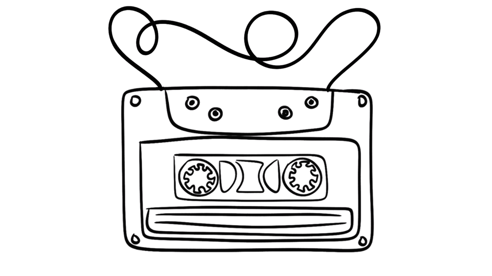

Home
Books
Albums/Music
Movies

Music
Fun - Aim & Ignite (2009)
Andre 3000 - New Blue Sun (2023)
Steely Dan - Can't Buy A Thrill (1972)
Bloc Party - A Weekend In The City (2007)
Hot Chip - The Warning (2006)
Depeche Mode - Delta Machine (2013)
Alice In Chains - Dirt (1992)
Seether - Isolate + Medicate (2014)
Finger Eleven - Them vs. You vs. Me (2007)
Van Morrison - Moondance (1970)
Live - V (2001)
The Misfits - Famous Monsters (1999)
IDLES - TANGK (2024)
Talking Heads - 177 (1977)
Pond - The Weather (2017)
Keane - Under The Iron Sea (2006)
Janes Addiction - Strays (2003)
Kasabian - West Ryder Pauper Lunatic Asylum (2009)
Fine Young Cannibals - The Raw & The Cooked (1988)
Billy Talent - Billy Talent ||| (2009)
Breaking Benjamin - Phobia (2006)
Something For Kate - Echolalia (2001)
Rick Ross - Teflon Don (2010)
Bread - On The Waters (1970)
Skillet - Awake (2009)
L7 - Bricks Are Heavy (1992)
Modest Mouse - Good News For People Who Love Bad News (2004)
The Superjesus - Jet Age (2000)
Craig David - Trust Me (2007)
Guacayo - Yuniverse (2019)
Motionless In White - Disguise (2019)
Five For Fighting - America Town (2000)
Blue King Brown - Born Free (2014)
Shinedown - The Sound of Madness (2008)
Pearl Jam - No Code (1996)
The Flaming Lips - Transmissions from the Satellite Heart (1993)
Corey Hart - First Offense (1983)
Santigold - I Don't Want: The Gold Fire Sessions (2018)
Darwin Deez - Double Down (2015)
A Day To Remember - What separates me from you (2010)
Fontaines D.C. - Romance (2024)
Marcy Playground - Marcy Playground (1997)
Pierce the Veil - Collide with the sky (2012)
Prophets of Rage - Prophets of Rage (2017)
Bad Neighbour - Millions (2024)
The Outfield - Play Deep (1985)
Moby - I Like to Score (1997)
Bare Naked Ladies - Maybe you should drive (1994)
Panic! At The Disco - Vices and Virtues (2011)
Suicidal Tendencies - Freedumb (1999)
The White Stripes - Get Behind Me Satan (2005)
Boy & Bear - Harlequin Dream (2013)
Judas Priest - Sin after Sin (1977)
The Black Keys - Dropout Boogie (2022)
Snoop Dog and Dr Dre - Missionary (2024)
Hinder - Extreme Behaviour (2005)
Lady Gaga - Chromatica (2020)
Rain City Drive - To better days (2020)
Joy Division - Unknown Pleasures (1979)
Pierce Brothers - My Tired Mind (2017)
Lynyrd Skynrd - Pronounced 'Lĕh-'nérd 'Skin-'nérd (1973)
DANGERDOOM - THE MOUSE AND THE MASK (2005)
London Grammar - Californian Soil (2021)
3 Doors Down - Away from the sun (2002)
Sade - Diamon Life (1984)
Crooked Colours - Tomorrows (2022)
Blue Öyster Cult - Agents of Fortune (1976)
Crash Test Dummies - God Shuffled His Feet (1993)
Architects - The Sky, The Earth and All Between (2025)
Sneaky Sound System - 2 (2008)
The Jesus Lizard - Rack (2024)
Hazel English - Real Life (2024)
The Red Jumpsuit Apparatus - Don't you fake it (2006)
Mudvayne - Mudvayne (2009)
Palace - Life After (2019)
Hollywood Undead - Notes from the Underground (2012)
Incubus - Make Yourself (1999)
The Wombats - Oh! The Ocean (2025)
Three Days Grace - Human (2015)
The Butterfly Effect - Imago (2006)
Placebo - Meds (2006)
Living Colour - Vivid (2023 Remaster) (1988)
Black Sabbath - Volume 4 (1972)
Love Fame Tragedy - Wherever I Go I Want To Leave (2020)
Laura Branigan - Self Control (1984)
Neil Young & Crazy Horse - Rust Never Sleeps (1979)
Underoath - They're only chasing safety (2004)
Bryan Adams - Into the fire (1987)
Timberland - Shock Value (2007)
Muse - Drones (2015)
Volbeat - Guitar gangsters & cadillac blood (2008)
M.I.A - Kala (2007)
Cloud Control - Zone (2017)
Tom Petty - Full Moon Fever (1989)
She Wants Revenge - Valleyheart (2011)
Royel Otis - Hickey (2025)
The Babys - Head First (1978)
Switchfoot - Learning to breathe (2000)
Little Dragon - Season High (2017)
Aerosmith - Just Push Play (2001)
Quarashi - Jinx (2002)
Groove Armada - Black Light (2010)
Papa Roach - Ego Trip (2022)
Dimmu Borgir - In Sorte Diaboli (2007)
Boston - Walk On (1994)
Rammstein - Reise Reise (2004)
Stone Temple Pilots - Purple (1994)
Shiny Toy Guns - Season of Poison (2017)
Quiet Riot - Metal Health (1983)
Wheatus - Wheatus (2000)
Blossoms - Blossoms (2016)
Akon - Konvicted (2006)
Soulfly - Omen (2010)
Fidlar - Almost Free (2019)
Puddle of Mudd - Famous (2007)
Ann Peebles - I can't Stand The Rain (1974)